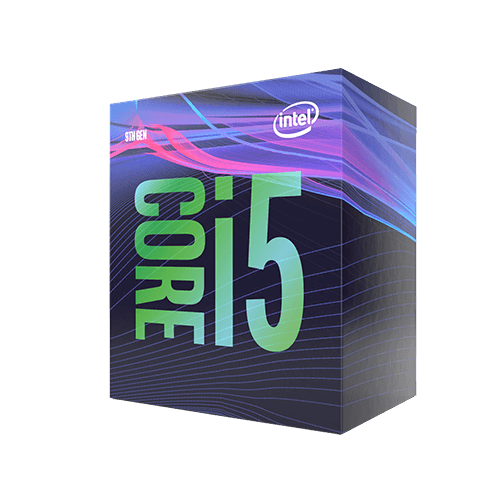

frekvencia


| AMD | INTEL | |||
|---|---|---|---|---|
| AMD Ryzen™ 5 2600.txt | AMD Ryzen™ 5 3600.txt | Intel® Core™ i5-8400.txt | Intel® Core™ i5-9400.txt | |
| magok száma | 6 mag | |||
| szálak száma | 12 szál | 6 szál | ||
| órajel frekvencia |
3.4 Ghz | 3.6 Ghz | 2.8 Ghz | 2.9 Ghz |
| TDP | 65w | |||
|
|
|
 | |
| Ár | 47.320 - 55.390 | 79.990 - 87.782 | 58.970 - 60.140 | 58.090 - 61.490 |
| specifikációk | specifikációk | specifikációk | specifikációk | |
| sebesség teszt | sebesség teszt | sebesség teszt | sebesség teszt | |
A WebP (ejtsd: „veppi”) egy új, veszteséges és veszteségmentes tömörítést alkalmazó képformátum. A Google fejlesztette ki, hogy csökkentse a web hálózati forgalmának jelenleg (2010) mintegy 65%-át adó képfájlok átlagos méretét, ezzel is gyorsítva a weboldalak betöltődését. A Google tesztjei szerint amit a weben található egymillió, véletlenszerűen kiválasztott képfájl (többnyire JPG, néhány PNG és GIF) tömörítésével végeztek, átlagosan 39%-kal lehetett csökkenteni a fájlok méretét, szemmel látható minőségvesztés nélkül. A WebP a VP8 videotömörítő (a WebM kodekje) intra frame kódolóján alapul, konténerként RIFF-et használ. A Google a Chromium blogján jelentette be az új formátumot 2010. szeptember 30-án. A Google-termékek közül elsőként a Chrome webböngészőben jelent meg a WebP támogatása (a Safari által is használt WebKithez kiadott patch formájában).
2011. október 3-án jelentették be, hogy a WebP a RIFF konténer segítségével támogatni fogja az animációt, az ICC profilokat, az XMP metaadatokat és a csempézést (legfeljebb 16384×16384 pixeles képekből óriáskép előállítása). 2011. november 18-án kezdték tesztelni a veszteségmentes tömörítés és az alfacsatorna (átlátszóság) támogatását, ez végül a libwebp 0.2.0 változatában, 2012. augusztus 16-án jelent meg. Saját kezdeti méréseik alapján a PNG → WebP átalakítás során a weben található képek átlagosan 45%-kal, az előzetesen pngcrush-sal és pngouttal optimalizált képek 28%-kal lettek kisebbek.
Forrás: WikipédiaThen Thermal design power (TDP), sometimes called thermal design point, is the maximum amount of heat generated by a computer chip or component (often a CPU, GPU or system on a chip) that the cooling system in a computer is designed to dissipate under any workload.
The TDP is typically not the largest amount of heat the CPU could ever generate (peak power), such as by running a power virus, but rather the maximum amount of heat that it would generate when running "real applications". This ensures the computer will be able to handle essentially all applications without exceeding its thermal envelope, or requiring a cooling system for the maximum theoretical power (which would cost more but in favor of extra headroom for processing power). The dynamic power consumed by a switching circuit is approximately proportional to the square of the voltage: P=cv2f